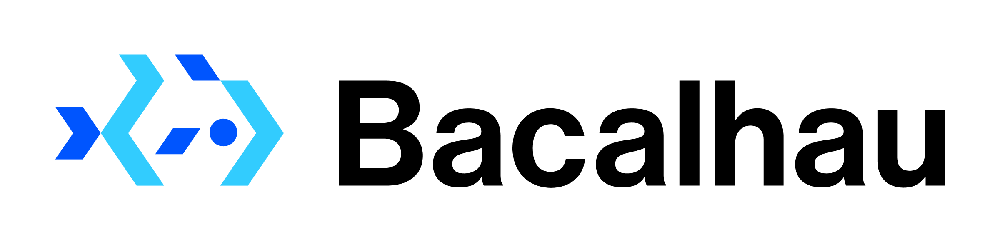

What is Bacalhau?
Bacalhau is a platform for fast, cost efficient, and secure computation by running jobs where the data is generated and stored. With Bacalhau, you can streamline your existing workflows without the need of extensive rewriting by running arbitrary Docker containers and WebAssembly (wasm) images as tasks. This architecture is also referred to as Compute Over Data (or CoD). Bacalhau was coined from the Portuguese word for salted Cod fish.
Bacalhau seeks to transform data processing for large-scale datasets to improve cost and efficiency, and to open up data processing to larger audiences. Our goals is to create an open, collaborative compute ecosystem that enables unparalleled collaboration. At the moment we are free volunteer network, enjoy;)
Why Bacalhau?‚Äã
⚡️ Jobs in Bacalhau are processed where the data was created and all jobs are parallel by default.
üîê You can run private workloads to reduce the chance of leaking private information or inadvertently sharing your data outside of your organization.
üí∏ Bacalhau reduces ingress/egress costs since jobs are processed closer to the source.
ü§ì You can mount your data anywhere on your machine, and Bacalhau will be able to run against that data.
üí• You can integrate with services running on nodes to run a jobs, such as on DuckDB.
üìö Bacalhau operates on a network of open compute resources made available to serve any data processing workload. With Bacalhau you can batch process petabytes (quadrillion bytes) of data.
üéÜ You can auto-generate art using a Stable Diffusion AI model trained on the chosen artist‚Äôs original works.
Fast Track ⏱️​
Understand Bacalhau in 1 minute
Install the bacalhau client:
curl -sL https://get.bacalhau.org/install.sh | bash
Submit a "Hello World" job:
bacalhau docker run ubuntu echo Hello World
The job runs on the global Bacalhau network.
Download your result:
bacalhau get 63d08ff0..... # make sure to use the right job id from the docker run command
For a more detailed tutorial, check out our Getting Started tutorial.
How it works‚Äã
The goal of the Bacalhau project is to make it easy to perform distributed computation next to where the data resides. In order to do this, first you need to ingest some data.
Data ingestion‚Äã
Data is identified by its content identifier (CID) and can be accessed by anyone who knows the CID. Here are some options that can help you mount your data:
- Copy data from a URL to public storage
- Pin Data to public storage
- Copy Data from S3 Bucket to public storage
The options are not limited to the above mentioned. You can mount your data anywhere on your machine, and Bacalhau will be able to run against that data
Security in Bacalhau‚Äã
You could use environment variables to store sensitive data such as access tokens, API keys, or passwords. These variables can be accessed by Bacalhau at runtime and are not visible to anyone who has access to the code or the server. Endpoints can also be used to provide secure access to Bacalhau. This way, the client can authenticate with Bacalhau using the token without exposing their credentials.
Workloads Bacalhau is best suited for‚Äã
Bacalhau can be used for a variety of data processing workloads, including machine learning, data analytics, and scientific computing. It is well-suited for workloads that require processing large amounts of data in a distributed and parallelized manner.
Use Cases‚Äã
Once you have more than 10 devices generating or storing around 100GB of data, you're likely to face challenges with processing that data efficiently. Traditional computing approaches may struggle to handle such large volumes, and that's where distributed computing solutions like Bacalhau can be extremely useful. Bacalhau can be used in various industries, including security, web serving, financial services, IoT, Edge, Fog, and multi-cloud. Bacalhau shines when it comes to data-intensive applications like data engineering, model training, model inference, model training, model dynanmics, etc.
Here are some example tutorials on how you can process your data with Bacalhau:
- Stable Diffusion AI
- Generate Realistic Images using StyleGAN3 and Bacalhau
- Object Detection with YOLOv5 on Bacalhau
- Running Genomics on Bacalhau
- Training Pytorch Model with Bacalhau
For more tutorials, visit our example page
Roadmap‚Äã
Our mission is to transform the way that compute is run globally. You can find Bacalhau's Public Roadmap here!
Community‚Äã
Bacalhau has a very friendly community and we are always happy to help you get started:
- GitHub Discussions – ask anything about the project, give feedback or answer questions that will help other users.
- Join the Slack Community and go to #bacalhau channel – it is the easiest way engage with other members in the community and get help.
- Contributing – learn how to contribute to the Bacalhau project.
Next Steps‚Äã
üëâ Continue with Bacalhau Getting Started guide to learn how to install and run a job with the Bacalhau client.
üëâ Or jump directly to try out the different Examples that showcases Bacalhau abilities.